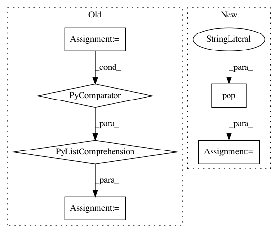

09fb46dc98b3da44293a8f387bc848e3055c1947,ggplot/geoms/geom_path.py,geom_path,draw,#Any#Any#Any#,23
Before Change
pinfo["edgecolor"] = make_color_tuples(pinfo["edgecolor"],
pinfo["alpha"])
lines = [((x[i], y[i]), (x[i+1], y[i+1])) for i in range(len(x)-1)]
lines = LineCollection(lines,
edgecolor=pinfo["edgecolor"],
linewidths=pinfo["linewidth"],
linestyles=pinfo["linestyle"])
ax.add_collection(lines)
@staticmethod
def draw_legend(data, da, lyr):
After Change
pinfo["edgecolor"] = make_color_tuples(pinfo["edgecolor"],
pinfo["alpha"])
constant = kwargs.pop("constant", False)
if not constant:
_draw_segments(pinfo, ax, **kwargs)
else:
_draw_lines(pinfo, ax, **kwargs)
In pattern: SUPERPATTERN
Frequency: 4
Non-data size: 6
Instances
Project Name: has2k1/plotnine
Commit Name: 09fb46dc98b3da44293a8f387bc848e3055c1947
Time: 2015-05-18
Author: has2k1@gmail.com
File Name: ggplot/geoms/geom_path.py
Class Name: geom_path
Method Name: draw
Project Name: analysiscenter/batchflow
Commit Name: cba76d5cf38125d9dc221dbe0681a7710d5d06d3
Time: 2020-12-01
Author: rhudor@gmail.com
File Name: batchflow/batch.py
Class Name: Batch
Method Name: apply_parallel
Project Name: analysiscenter/batchflow
Commit Name: 1f47b5c59387812151bbe0f6a5838fed4fa09a1e
Time: 2017-12-14
Author: rhudor@gmail.com
File Name: dataset/models/tf/refinenet.py
Class Name: RefineNet
Method Name: block
Project Name: chakki-works/doccano
Commit Name: 91d969d95192fb1639efb60d89289b8eba59092f
Time: 2019-12-12
Author: clewolff@microsoft.com
File Name: app/api/utils.py
Class Name: Speech2textStorage
Method Name: save